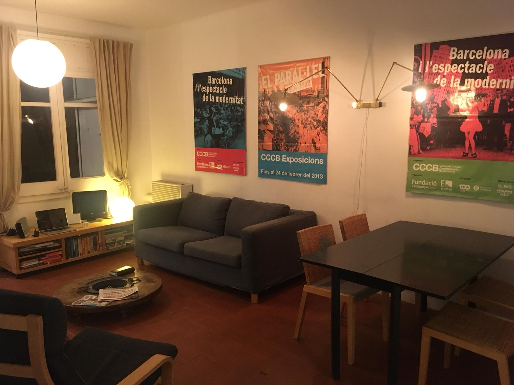

Welcome to our charming flat in Barcelona available for holiday rental.
A light & airy flat at the heart of the medieval city.
Arenes de sant pere is a peaceful, sunny haven above the rooftops,
close to the main action – the ramblas, el born and the picasso museum -
yet in a vibrant, happening neighbourhood that’s delightfully free of tourists.
Sleeps up to five people. One double bedroom, a double pull-out sofa-bed,
and a further single bedroom upstairs.
See below for contact details to enquire about availability and booking.
Enjoy your stay in Barcelona
We love exploring Barcelona, finding local hidden gems to eat, drink and discover.
This webpage is to share our favourite local spots for you to enjoy too!
Check them out here.
We always love hearing recommendations from you too! Please share your spots with us - contact details below.